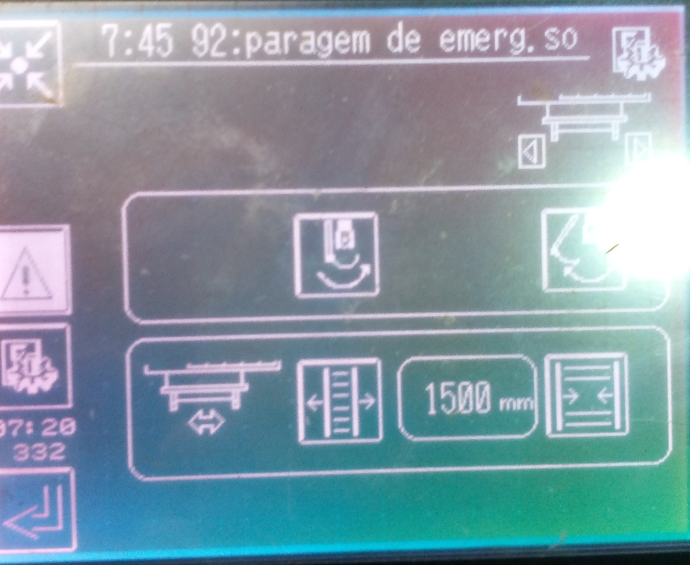
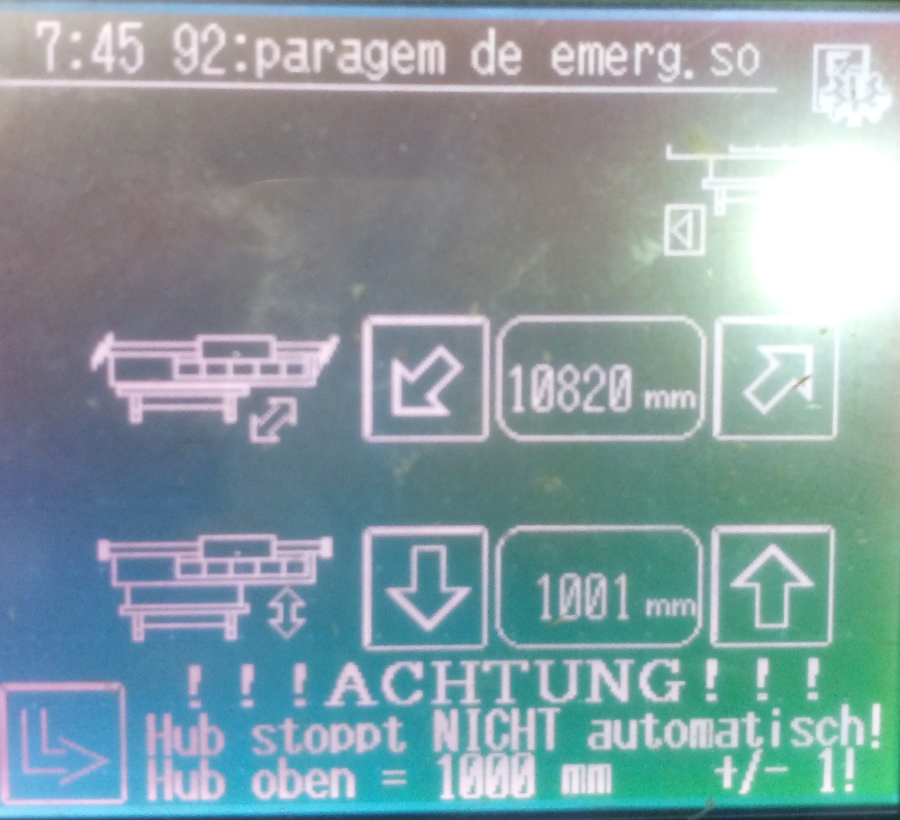

Manutenção Ilustrada • Ponte Bauer LA1 |
← Voltar |
🔍 Pontos de Verificação Obrigatórios

1. Largura Alvo
1500 mm

2. Altura Alvo
1000 mm

3. Estacionamento
Carro 6
🛠️ Lista de Erros e Procedimentos de Manutenção
| Código / Tipo de Erro | Componente Real | Ação Corretiva e Manutenção |
|---|---|---|
| Erro do bus codificador elevador |

|
|
| Falha de comunicação PLC / Grua |

|
|
| Sobrecarga no motor de translação |

|
|